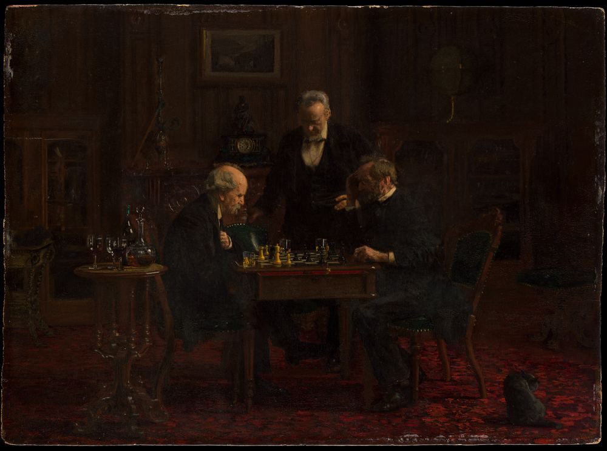
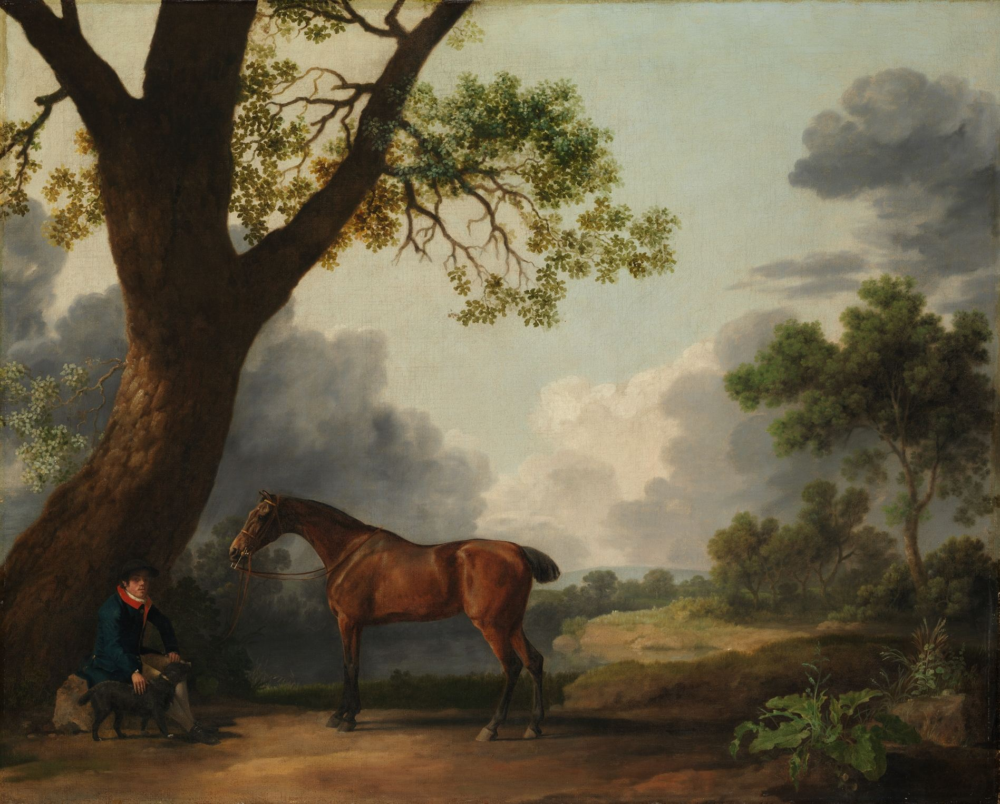
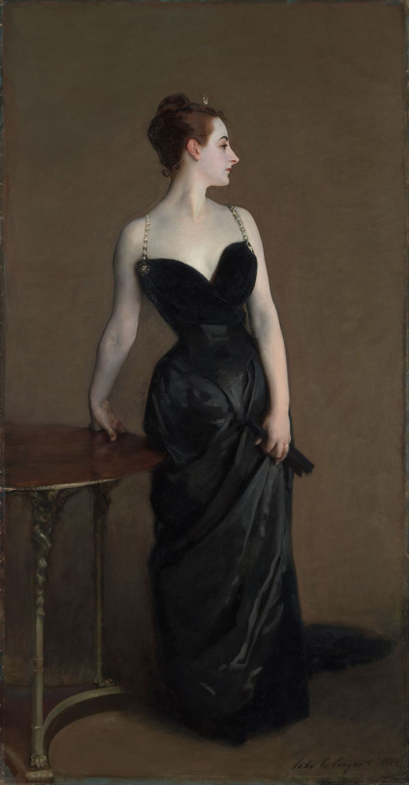
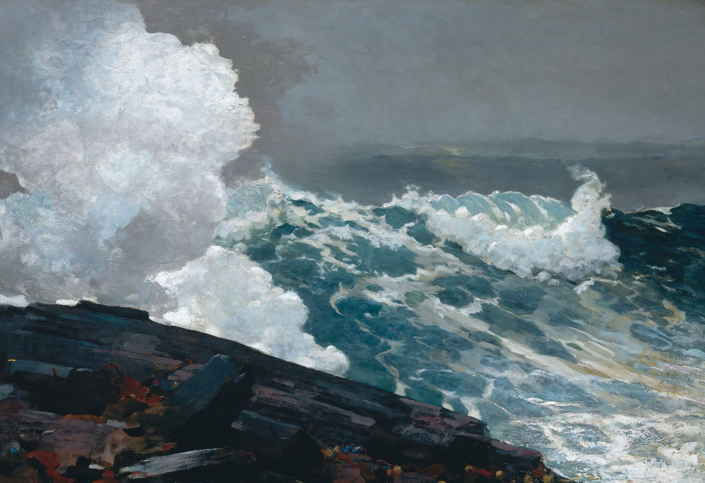
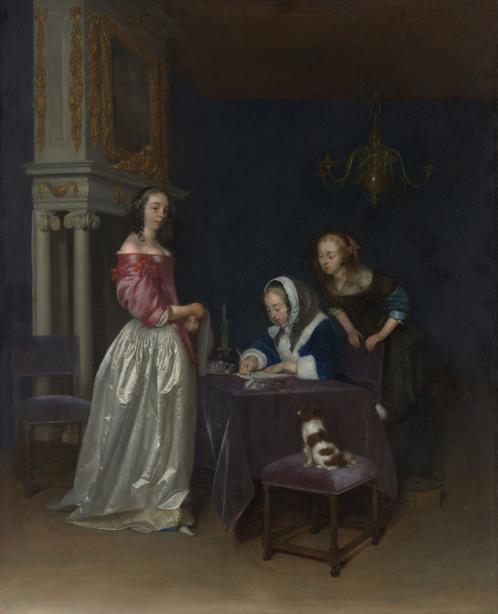
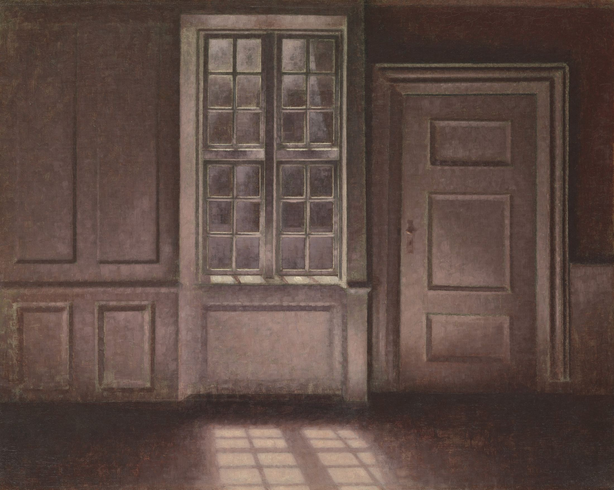
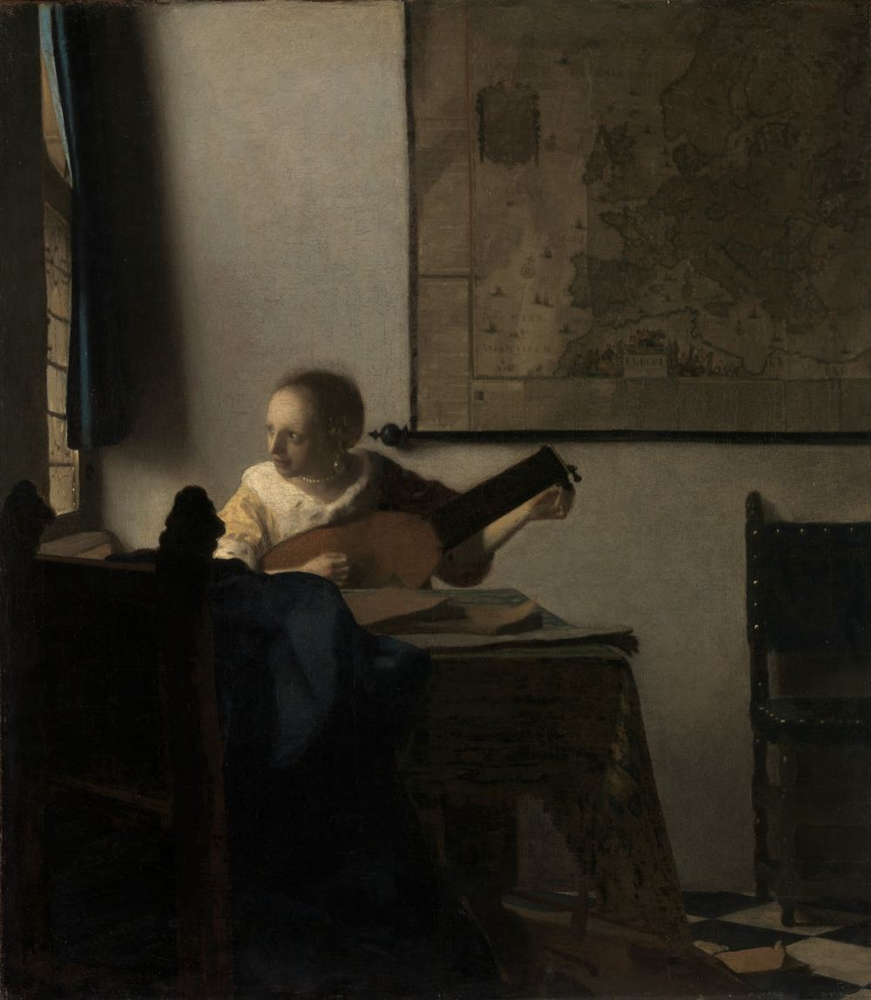
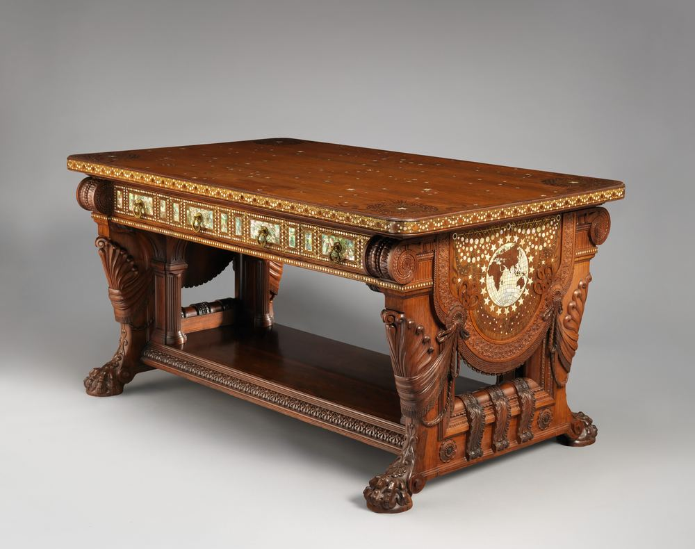

VANSTEENPAAL
Software BUILT QUIETLY,
and BUILT TO LAST.
Tygo Vansteenpaal is a student developer in Rotterdam. He builds security tools, Roblox systems and software for the web.

Direction,
TURNED INTO CRAFT.
T—V
George Stubbs, The Third Duke of Dorset's Hunter with a Groom and a Dog, 1768
the ESSENCE of the WORK
where SECURITY
meets CRAFTSMANSHIP

Every script in a game runs with the game's full trust. The work is making sure that trust is earned: reading code the way an attacker writes it, and building tools and interfaces that behave exactly as they say.
Method: from script, to scan, to safe



01 / Script
A free model arrives with forty scripts nobody has read. One of them may load code from someone else's account.
02 / Scan
Ember opens the model file and reads every script the way an attacker writes it: hidden IDs, encoded names, code pushed off-screen.
03 / Safe
You publish only what you understand. Anything suspicious is named, located and explained before it reaches a player.
Selected
works
Three projects, each built to solve a real problem. All source code is public on GitHub.


a STUDENT in ROTTERDAM
EIGHTEEN, third year at the GRAFISCH LYCEUM ROTTERDAM.
I am drawn to programming, to cybersecurity, and to software that makes ordinary tasks easier. I learn by building real projects, and I am always looking for ways to learn more. In my free time, I game.
- Languages
- Luau, Python, TypeScript, JavaScript, PHP, HTML, CSS
- Frameworks
- React, Three.js, Tailwind CSS, Vite
- Data
- MongoDB, SQLite
- Design
- Figma, Canva
Start a
CONVERSATION
-
Email
tygovansteenpaalwerk@
gmail.com - GitHub tygovansteenpaalwork-gif